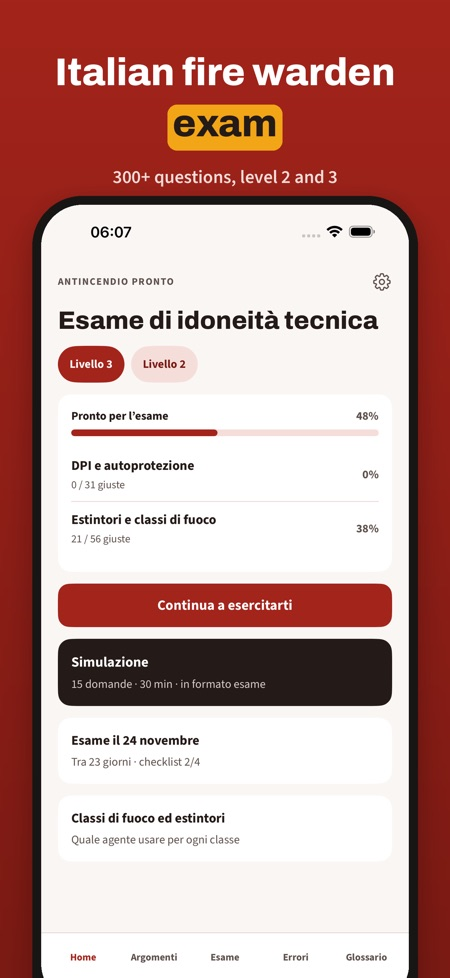
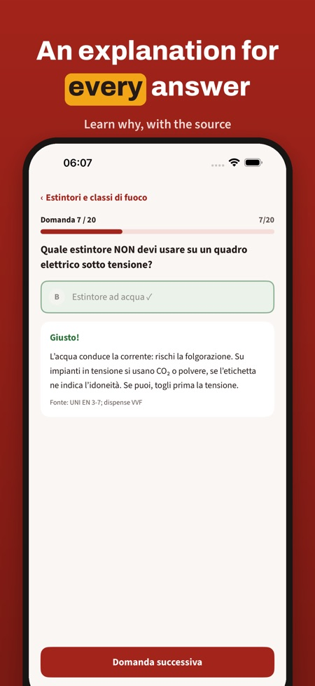
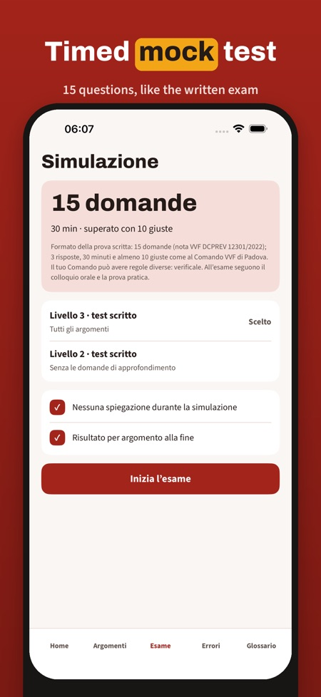

Italian fire warden exam prep. Practise for the Italian fire warden exam (idoneità tecnica antincendio): 300+ questions with explanations, timed mock tests and a mistakes review. In Italian, offline.



Antincendio Pronto helps you prepare for the Italian fire warden exam: the “esame di idoneità tecnica per addetto antincendio”, level 2 (medium risk) and level 3 (high risk).
The app is in Italian, like the exam.
Without a purchase you can practise 20 questions, take one full mock test and use the glossary and the checklist. The full version is a one-time purchase that unlocks all questions, mock tests and statistics. No subscription.
Antincendio Pronto is independent and is not affiliated with the Vigili del Fuoco or any training provider. The exam is taken at the provincial fire brigade command (Comando VVF).